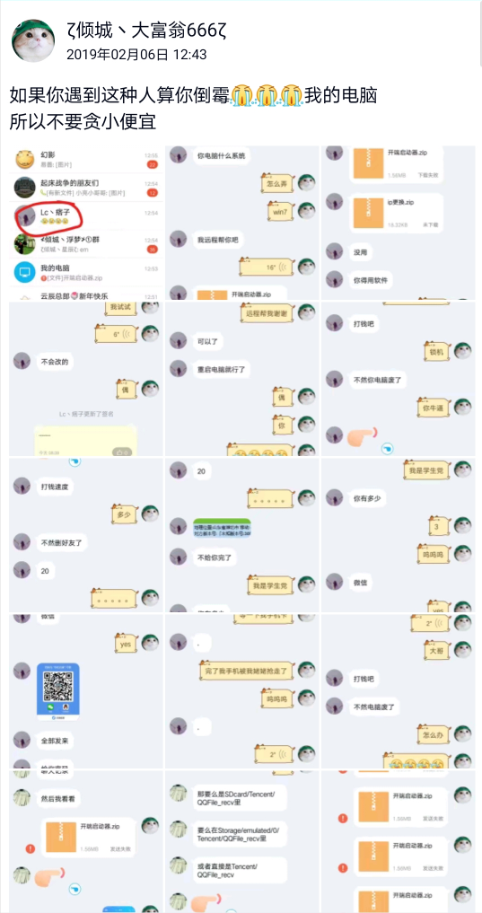
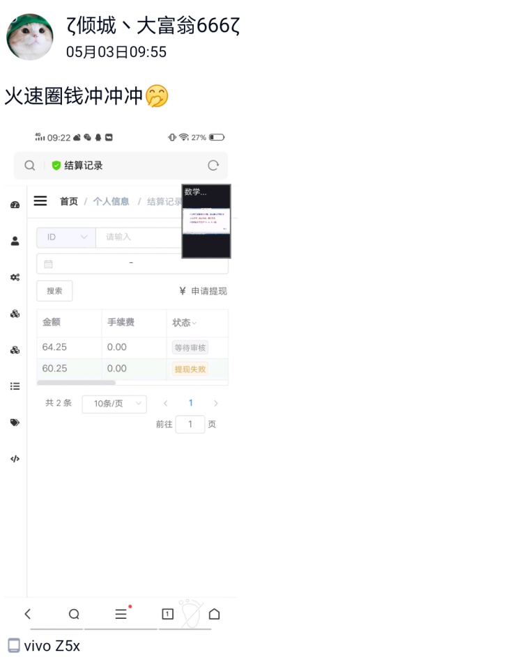
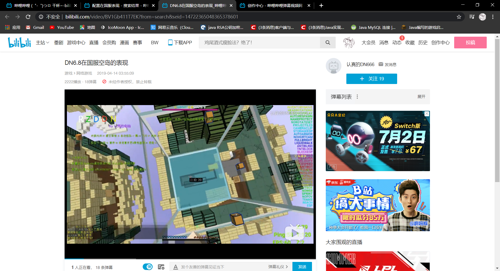
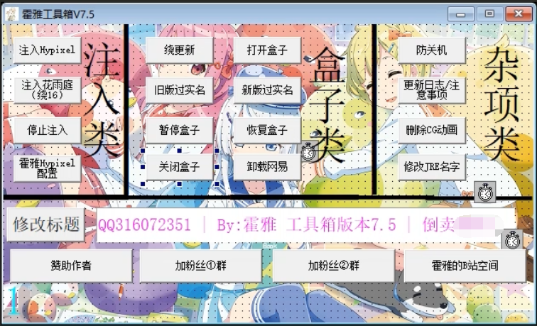
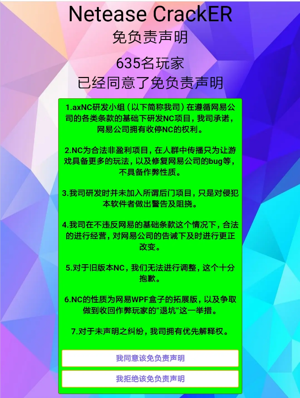
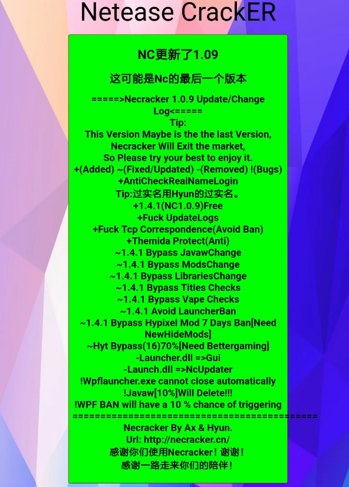

2017年
这时候我还没入圈，不云了。
2018年 7月
当时hack圈萌新很多，很多人都开不明白，就会到处找人求教开挂。当然在这过程中还有一些人因此受害的，例如被锁机，
让我们来看一位小兄弟的例子：

当然，这也仅仅是其中一个而已，像这样受害者还有很多很多。
最为讽刺的是，让我们看看这位小兄弟现在的样子：

诸如此类的还有很多，我就不细讲了。
外部与内部(圈钱)
外部是圈钱大神开的QQ交流群。圈钱大神通过外部来吸引想开挂的萌新，他们宣传外部的途径基本上有：
1. 通过在其他人多的外部宣传自己的外部和内部
例如：
xxx史上最强内部
水影配置完美bypass国服hypixel√
killaura永不空刀√
speed绝不回弹√
配置作者更新勤快，基本一天一更√
还在等什么？仅需15r，你就会拥有最棒的游戏体验！
xxx外部交流群：1083824250
2.通过录制视频发到b站来进行宣传自己的水影配置
例如这种：

以前b站有很多这种类型的视频，但现在基本上都被举报死光了。
这种外部群规模大的有2000人，有的开不起2000人群就会开1群，2群，3群。
他们的特点通常是在外部放一个免费的水影配置，做一个视频教程，供萌新下载来进行开G。
但这种水影配置，基本上都是玩5分钟就被ban的配置，从而让你去打钱进入内部获得稳定的水影配置。
2.工具箱
在这些外部与内部中，圈钱大神一般不止卖水影配置，也包括其他很多东西，sfz，hj，黑卡等等其他各类东西，在这之中还有一样东西：工具箱
工具箱一般都是方便你进行开G的，它集成的功能一般有：绕过网易防沉迷验证，绕过网易盒子更新，网易封禁拦截，自动互换jre，自动注入水影mod等等
制作工具箱相较于制作水影配置的技术要求稍高一点，因为制作工具箱需要会编程
但99%的工具箱，都是用易语言编写的，相较于C#之类的语言，入门难度较低
要制作这种工具箱，很容易，因为大部分功能的源码，易语言大佬都开源了，做这种工具箱只需要做几个按钮，然后把功能源码抄过来，就是自己的工具箱了
但像这种工具箱，UI都很丑，有些还很龙鸣，基本上都是一堆按钮放在一起，故被称为：按钮合集。

但在这之中，也有制作精良的工具箱，例如最有名的：Necracker


3.穷人俱乐部小事件
描述
“正义人士”将黑客圈50%圈钱大神的内部（或许有这么多，我意淫的）里的水影配置，工具箱等等全部泄露到一个500人QQ群里面，群名：穷人俱乐部。
事件起因
找乐子。
事件经过
“正义人士”先是创建了一个500人QQ群，群名：穷人俱乐部。之后用自己的渠道获取了许多圈钱大神的内部中的水影配置，工具箱，这些文件全部上传到了这个QQ群里面，之后开始大规模宣传。其宣传方式是QQ群宣传。由于其宣传话语引人瞩目，许多“穷人”便涌入到这个QQ群里，大家都下载到了自己想买但没钱买的配置，工具箱。
但这也同样引起了许多圈钱大神的注意。他们加入了这个QQ群便进行扣字，扬言出户籍等等。但这也没有使群主怎么样，反而变本加厉地泄露更多内部的水影配置，工具箱，像是铁了心要和圈钱大神对着干的。
但，人终究是有自己的目的的。
许多人发现了，这位“正义人士”泄露的工具箱，竟然上了qqkey！qqkey是一种病毒，顾名思义，如果中了病毒，你的QQ账号会被人盗走。使用了工具箱的“穷人”便开始十分慌张，不知道自己该怎么办。
这时，圈钱大神在群内进行宣传：“帮解qqkey病毒，30r，需要私聊我。”但群主又说：“工具箱没有qqkey，只是他们造谣罢了。”一时间，“穷人”不知道如何是好，到底是该打钱，还是该相信群主呢？后面发生的一系列事情，我也不过多描述了。
由于年代久远，“穷人俱乐部”早已解散，消息记录也没有保存，所以这里就不能放图给大家看乐子了。
4.Jbytemod字符串魔改大神
当圈内大佬ho3破解了Flux b13（一个黑客客户端）之后，圈内便涌起了一股魔改字符串潮流。各路圈钱大神便开始学习如何魔改字符串来制作“自己的黑客客户端”。
原理是什么呢？就是使用一个工具：Jbytemod，来反编译Flux b13，之后查找字符串“Flux”，全部改成自己客户端的名字。这样，你就制作了一个“自己的黑客客户端”。
圈钱大神当然没有只给自己用。他们用此作为自己内部的特色，并且提高了内部的价格，让自己的内部更加nb。从此大家由低质量的制作水影配置，到用Jbytemod魔改客户端了。
这里也有现存的相关视频：如何破解字符串端的HWID。
2019年
全民写端
描述
所有人都开始使用eclipse IDE去自己魔改和skid黑客客户端。
起因
一位名叫TNT_China的人，因为在暑假自学了Java 2个月便来尝试破解当时在圈内十分有名的客户端：Debug。他要尝试破解debug的消息被传入当时中国最大的黑客交流群：心灵澈风交流群。
Debug作者Margele也前来参观。当时TNT_China在自己的交流群开屏幕分享。经过一系列的这的那的，Margele和TNT_China成为了好兄弟。紧接着，Margele将他自己刚修复的ETB 0.6 SRC发给了TNT_China，但TNT_China觉得这并没有什么，就发到了自己的交流群。
随后，眼看全民写端就要到来，Margele便破罐破摔，将ETB 0.6 SRC发到了心灵澈风交流群。
事件经过
最开始使用ETB 0.6做为base并进行skid的应该是liquidslowly，赛维sicovo和我三个人。liquidslowly和赛维sicovo刚开始是两个人一起搞黑客客户端，但后来他们两个人自己去搞自己的黑客客户端了。
之后便是出现了一堆用ETB做为base的skidder。
在ETB SRC被泄露之前，也出现了用slowly或Ave做为base的skidder。
2.国服hypixel黑客逐渐转移国际服
3.陆续出现自写clickgui（目前能自写的人屈指可数）
4.陆续出现自写base（目前能自写的人屈指可数）
5.一些人陆续退圈
About this Post
This post is written by makai410, licensed under CC BY-NC 4.0.